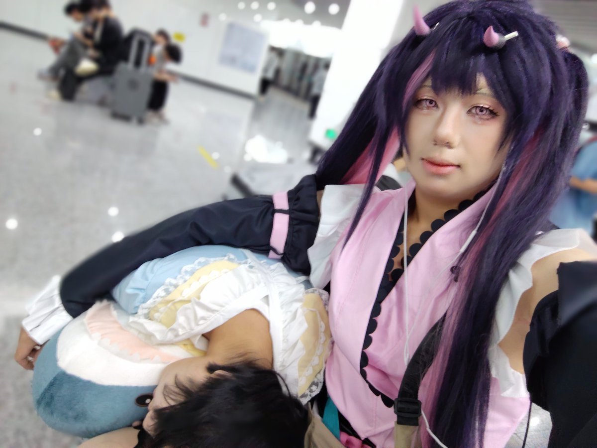
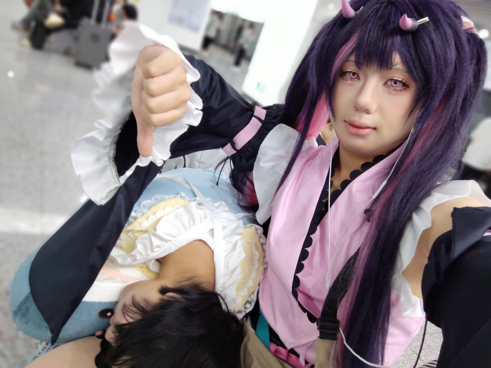

Iris CHU_00B2🍥
@chu_00b2
@Yucha_offical @LeavesMao 熬夜的话底妆上不去的哇，猫猫叶不知道的吗


雨茶Offical
@Yucha_offical
搞二次元的应该都知道出cos前一天晚上尽量早点睡
因为这样不仅可以精神饱满的去出角色
而且化妆的效果会更好
然而@LeavesMao 这家伙不是搞二次元的
所以ta熬了一个雷霆大通宵然后现在在地铁站睡了1个小时cos睡美人🤔🤔🤔
#cosplayㅤㅤㅤㅤㅤㅤㅤ #驹泽乃依 #男の娘 https://t.co/9GpiRRmYi9